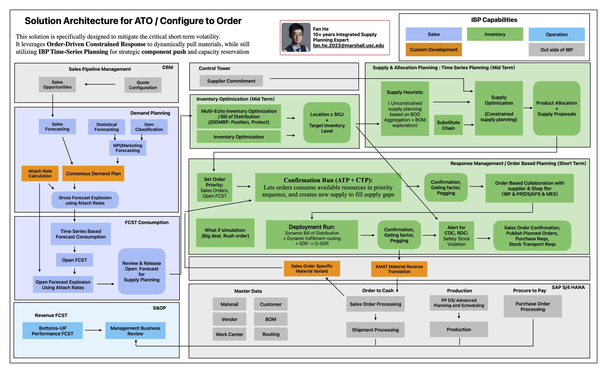
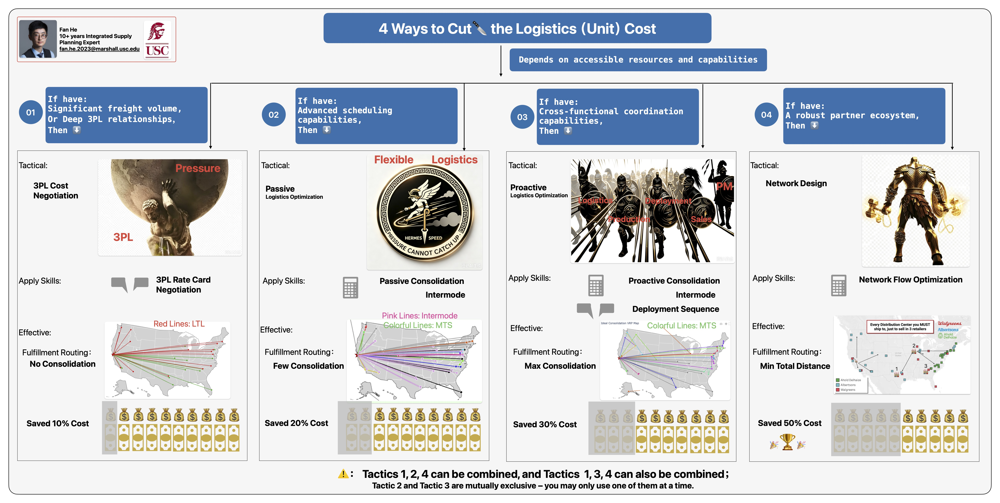

Case Background
Assume a technology company is launching a flagship hardware product. Ahead of the nationwide GTM rollout, retail partners grant dedicated store windows to deploy branded display stands across targeted sites. Once crated and palletized, each stand weighs 1,000 lbs and slightly exceeds standard U.S. pallet dimensions. Consequently, load capacity is capped at 20 units per container, whether using 40ft Intermodal containers or 53ft High-Cube Truckloads (FCL).
The Start: Demand Distribution - Geography
All order fulfillment start with customer demand (leads).
- • Customer A: 13 sites, 20 units/site, 4-week deployment lead time per site.
- • Customer B: 22 sites, 10 units/site, 2-week deployment lead time per site.
- • Customer C: 20 sites, 5 units/site, 1-week deployment lead time per site.
- • Exact geospatial coordinates (Latitude & Longitude) are captured for every site to drive route and modal optimization.
The End: Logistics Cost Baseline
Let's skip to the final outcome: the waybill statistics and set a basline for further analaysis.
Customer A's sites each require 20 units (meeting the FCL threshold), all 13 of its shipments go FCL.
All remaining shipments for Accounts B and C default to LTL.
The Magic in the Middle: MINI IBP
Between capturing market leads and fulfilling orders, there lies a chain of critical processes and strategic decisions—ranging from Product Lifecycle Management (PLM) and Go-To-Market (GTM) to Production Ramp-Up. For our focus here, we will skip upstream execution (PLM, Procure-to-Pay, Shop Floor Assembly) and jump straight into Integrated Supply Planning.
Integrated Business Planning (IBP) inherently involves numerous decision nodes. To keep things focused, let's zoom in on the core checkpoints marked with 💡 Lightbulb icons:

💡 Tip: Click on any glowing bulb on the architecture diagram to view detailed optimization strategies.
Conclusion: 4 Ways to Cut the Logistics (Unit) Cost
